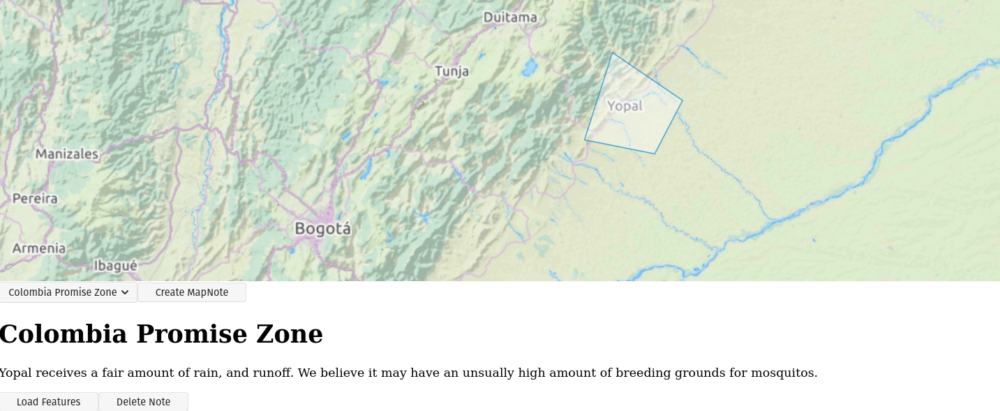
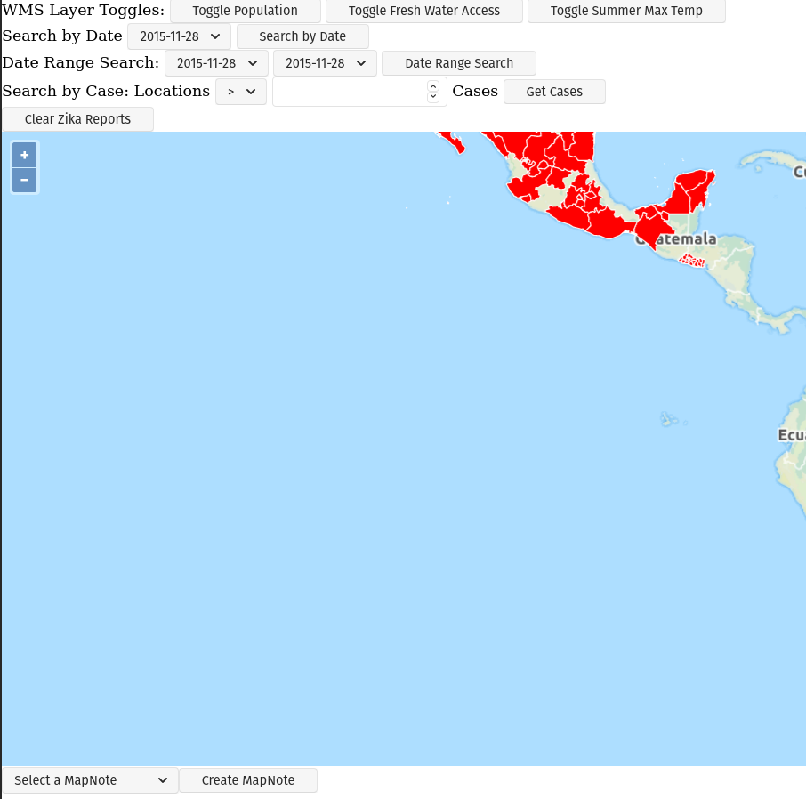
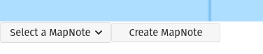
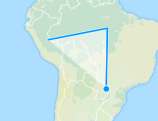
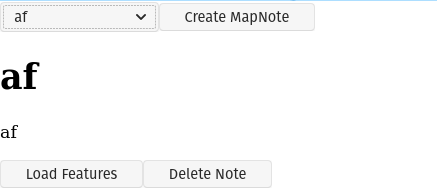

Zika Mission Control
We continue to work on our Zika Client this week, by incorporating some features that consume a RESTful Map Notes API.
The Map Notes API provides the ability to save features that are drawn on an OpenLayers map together with a note title and note body. These Map Notes can be saved, recalled, and deleted from the API. This gives end users the ability to take notes on interesting areas around the map. With this application it may allow certain countries, or municipalities to mark areas within their borders as potential hotspots, or areas that may have unusual circumstances that make providing medical care difficult.
As an example consider the following image:

This feature will allow scientists to flag specific areas on the map as points of interest with regards to the Zika outbreak.
Project Overview
You objective for this week is to update your Zika Client to include this new Map Notes API.
Starter code has been provided so you can focus on the RESTful API calls from your Zika Client, however you are more than welcome to take a shot at building the entire Zika Client Map Notes integration yourself after completing the primary objectives.
Project Setup
In order to start working with this new Map Notes API we will need to do a few setup steps:
- Add mapnotes source code
- Add mapnotes API container
- Add HTML elements
- Initialize Map Notes
Add Map Notes source code
You will have three options for the amount of starter code that is given to you:
- primary objectives
- generic components + primary objectives
- blank starter
The Primary Objectives branch has you focused on the RESTful API calls that will be made to the Map Notes API.
The Generic Components branch has you focused on the RESTful API calls and creating the generic components.
The blank starter branch has a small amount of code, but largely just structure and you will be responsible for creating the majority of the module.
Your goal is to finish the primary objectives by the end of the week.
Primary Objectives Branch
With this branch you will be responsible for filling out the provided interfaces in:
new-notes-form-handlers.jsnote-viewer-handlers.jsnotes-manager-handlers.jsapi.jsmap-notes-layer.js
git clone -b primary-objectives-starter https://gitlab.com/LaunchCodeTraining/zika-project/mapnotes src/modules/mapnotes
rm -rf src/modules/mapnotes/.git
Generic Components + Primary Objectives
With the generic components branch you will be responsible for filling out everything listed above and the generic components found in generic-components.js.
git clone -b generic-components-starter https://gitlab.com/LaunchCodeTraining/zika-project/mapnotes src/modules/mapnotes
rm -rf src/modules/mapnotes/.git
Blank Starter
The blank starter branch, has some structure in place, but the rest is up to you.
git clone -b blank-starter https://gitlab.com/LaunchCodeTraining/zika-project/mapnotes src/modules/mapnotes
rm -rf src/modules/mapnotes/.git`
note
You will notice that each of these commands deletes the hidden .git/ directory within the mapnotes module. You will want this directory to be gone so that it doesn’t conflict with the .git/ directory of your base project.
warning
Regardless of the branch you start with you will be expected to finish the Primary Objectives within the week.
Add Map Notes API Container
The next step is to add the Map Notes API container to this project.
You can do this by appending a new service to the docker-compose.yml file located at the root of this project.
You will need to add as a new service:
mapnotes-api:
container_name: "zika-mapnotes-api"
image: "launchcodedevops/mapnotes-api-node"
ports:
- "8008:8008"
After adding this section your yaml file should look like:
version: "3.7"
services:
postgres:
container_name: "zika-postgres-db"
image: "launchcodedevops/zika:geoserver"
ports:
- "5432:5432"
geoserver:
container_name: "zika-geoserver-api"
image: "kartoza/geoserver:2.17.2"
ports:
- "8080:8080"
depends_on:
- postgres
mapnotes-api:
container_name: "zika-mapnotes-api"
image: "launchcodedevops/mapnotes-api-node"
ports:
- "8008:8008"
Add HTML elements
The MapNotes code you added in a previous step requires an OpenLayers map object, which you already have in your project. Map notes also requires two HTML divs to add the Map Note components to. You will need to add the following HTML after your map div:
<div id="mapnotes">
<div id="mapnotes-manager"></div>
<div id="mapnotes-active-note"></div>
</div>
When you initialize the Map Notes you will need to reference these two divs by their ids (mapnotes-manager and mapnotes-active-note).
note
You may want to change the CSS of your map. If it is currently set to take up 100% of the screen, it will be difficult for the user to see and interact with the Map Notes Manager that will be loaded in the next step.
Initialize Map Notes
Finally in your index.js, or wherever you first initialize your Open Layers map object, you will need to initialize map notes with the following JavaScript code:
initializeMapNotes({
map,
notesManagerTargetId: "mapnotes-manager",
activeNoteTargetId: "mapnotes-active-note"
});
Verify Setup
After setting everything up we need to check a couple of things to make sure this project is ready to go.
When running this project with npm run start it should start up three docker containers named:
zika-mapnotes-apizika-geoserver-apizika-postgres-db
You should check that all three of these containers started successfully by running docker ps. If you don’t see the zika-mapnotes-api container you may have an issue with adding the map notes API container.
You should also check that your Zika Client starts cleanly with no issues. If you pulled the primary-objectives branch you will notice a new select box, and button at the bottom of your application the first time it launches:

If you have any additional issues with starting this application reach out to an instructor.
Primary Objectives
You should complete all primary objectives before working on any secondary objectives.
Warning
You may discuss aspects of the project with other students if you are stuck. But you may not ever write nor share code with each other as part of that assistance.
Create click event handlerDraw Features click event handlerSave click event handler- Populate select box on load
Select box on change event handlerLoad Features event handlerDelete event handler
This week instead of having articles that help you collect your thoughts, you will be responsible for reading the provided code and thinking through what code will need to be added to the provided event handlers to achieve the objectives.
You may find the following images useful:
Map Notes Manager

The base view of our Map Notes Manager are the select box: mapnotes-notes-manager-note-selector and the Create MapNote button: mapnotes-note-manager-create.
What requests are necessary to load the initial notes into the select box?
What happens when a user clicks the Create MapNote button?
Map Notes Draw Interaction

A draw interaction needs to be enabled and disabled. Which buttons are these interactions tied to?
How do you get a Feature Collection out of the map so that it can be packaged into a fetch request?
Map Notes Note Viewer
What happens when a user selects a note from the select box?

What happens if the user clicks the Load Features button?
What happens if the user clicks the Delete button?
Take Inventory
Look over the provided code to get a sense of what has already been accomplished. You will be predominately writing code in:
new-notes-form-handlers.jsnote-viewer-handlers.jsnotes-manager-handlers.jsapi.jsmap-notes-layer.js
Think about the various handlers:
- What are they responsible for?
- What requests if any should they incorporate?
- What DOM elements are they associated with?
- How can they utilize the provided code?
MapNotes REST API Spec
Endpoints:
GET /notes -> (Note[]) 200GET /notes/{noteId} -> (Note) 200DELETE /notes/{noteId} -> 204POST /notes ({title, body}) -> (Note) 201GET /notes/{id}/features -> (GeoJSON feature collection) 200PUT /notes/{id}/features (GeoJSON feature collection) -> 201
Note
You will be using _both_ the GeoJSON readFeatures and writeFeatures methods. You have used readFeatures when loading your WFS layer. The writeFeatures method can be used to turn features into a GeoJSON string. Think about which one will be used when you are _receiving_ or _sending_ the note features.
Note Shape:
Note {
id: number,
title: string,
body: string
}
NoteFeatures Shape: a GeoJSON FeatureCollection
NoteFeatures {
type: "FeatureCollection",
features: NoteFeature[]
}
NoteFeature {
type: "Feature",
geometry: {
type: "Polygon",
coordinates: Coordinates[]
}
}
Turning in Your Work
Git Workflow
As you work on your project you will be required to commit early and commit often. Part of your review will include an assessment of your usage of git. You are expected to have a history of commits documenting your progress through the use of descriptive commit messages.
Your git history should include separate branches for each primary objective titled objective-# which contains all the commits associated with its completion.
After completing each objective you can git merge the objective feature branch back into your master branch. Make sure that you push your branches to the remote repo on GitLab after completing each of the primary objectives. This includes pushing the master branch after each objective branch is merged into it.
Warning
When you complete your final objective you will open a Merge Request (MR) on GitLab to merge that objective feature branch into master. Notify your instructor so they can begin your code review.
Code Review
After opening your MR your instructor will review your code and leave feedback. If changes are requested due to an incomplete or non-functioning objective you will be required to implement the suggested changes and push them up for further review. When your instructor has confirmed that your objectives are complete you can work on the Secondary and Bonus objectives!
Presentation
Typically at the end of the week we try to have project presentations where everyone gets a chance to show their project to the rest of the class. Due to the remote nature of this course we may try to do this, or we may skip this. Either way be prepared to show and talk about your project at the end of the project week.
At the end of this course, during your graduation ceremony, you will be expected to present your final project to the attendees. Every project week we will have a presentation as a way for you to practice for this final presentation.